Data: international relations and conflict
Source:vignettes/articles/data-political.Rmd
data-political.RmdEvents between states and political actors: machine-coded event data from news (GDELT, POLECAT, Phoenix), armed conflict dyads (UCDP), alliances (ATOP), diplomatic visits, fisheries treaties and refugee flows. Time is daily or yearly, actors are countries, and global covariates such as commodity prices or ENSO enter naturally through time-shifted sampling.
The data catalogue lists every dataset with its licence. Figures and numbers on this page are aggregates computed from the files as published; each section links the source and the code that reads it.
| dataset | events | actors | licence | amorem |
|---|---|---|---|---|
| GDELT event database (1979 file and one daily file) | 144,177 | 207 | unrestricted use and redistribution with citation | can bundle |
| POLECAT weekly event data 2024 | 64,979 | 3,790 | CC0 1.0 | can bundle |
| Cline Center Phoenix NYT event data 1945-2005 | 248,493 | 213 | unknown (databank page returned 403) | obtain from source |
| UCDP conflict data (GED, dyadic, actor, interstate onsets) | 3,518 | 704 | CC BY 4.0 | bundled as ucdp_dyads
|
| ATOP alliance treaty obligations 5.1 | 5,101 | 207 | none stated | obtain from source |
| Africa’s diplomatic visits (foreign ministers) 2010-2022 | 3,892 | 183 | CC BY 4.0 | can bundle |
| Italy’s diplomatic visits 2000-2023 | 2,631 | 158 | CC BY 4.0 | can bundle |
| Diplomatic visits of the foreign ministers of Russia and Ukraine 2021-2024 | 101 | 54 | CC0 1.0 | can bundle |
| US leader-to-leader diplomatic visits 1946-2019 | 3,945 | 197 | CC0 1.0 | bundled as us_leader_visits
|
| goldfish package data: fisheries treaties, RFID validity, Social Evolution | 69 | 33 | GPL-3.0 (source repository/package) | bundled as social_evolution_calls,
social_evolution_friendship,
social_evolution_actors since an earlier release; licence
under review |
| UNHCR refugee population statistics (refugees R package) | 114,516 | 211 | CC BY 4.0 | can bundle |
GDELT event database (1979 file and one daily file)
Source: https://www.gdeltproject.org/about.html · Licence: unrestricted use and redistribution with citation · Status in amorem: may be redistributed with attribution.
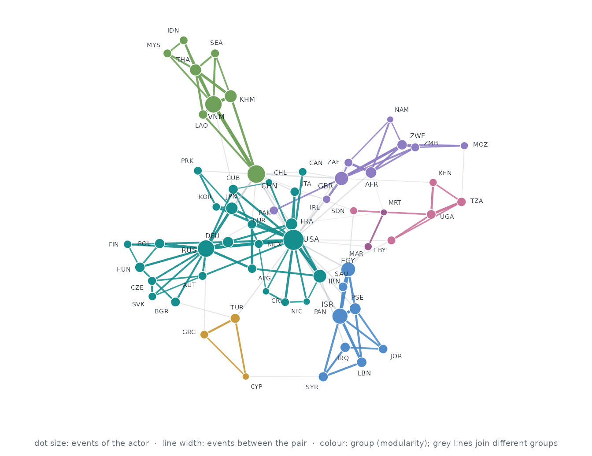
Who interacts with whom. The 60 actors of the busiest pairs, out of 207; events between two of them are 73.8% of all events. Each actor’s three strongest ties are drawn (141 of 1,185 pairs that ever interacted): wider, darker lines carry more events, larger dots are more active actors, and colours are groups found by modularity (Louvain).
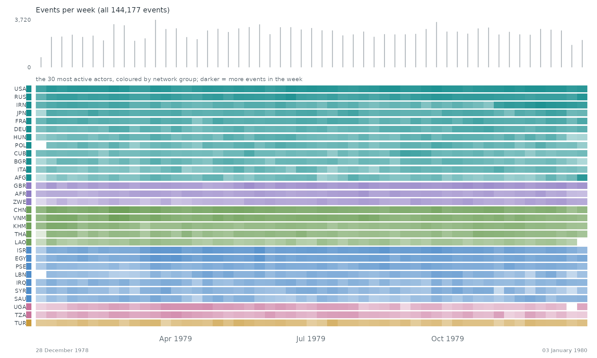
When. Each row is one of the 30 most active actors of the network, coloured by its group there; a cell is darker the more events (with anyone) the actor took part in during that stretch of time. The grey bars on top count all 144,177 events.
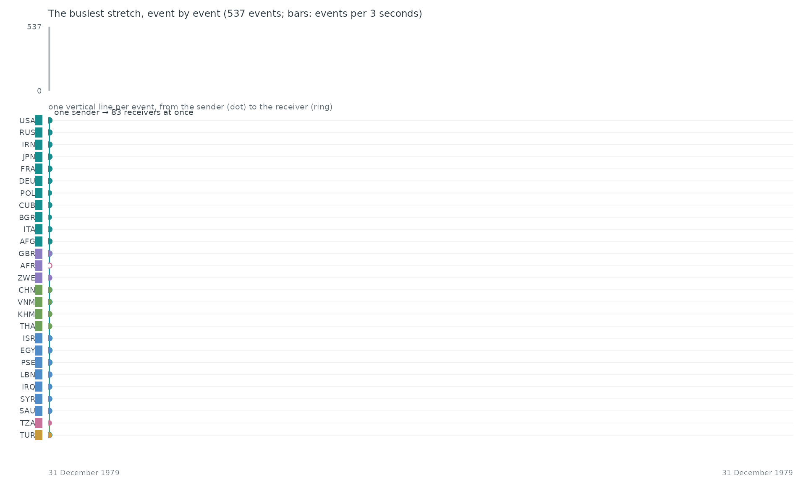
Event by event. The busiest stretch of the record, 31 December 1979 to 31 December 1979, event by event: each vertical line is one event between two of the actors above, from the sender (dot) to the receiver (ring).
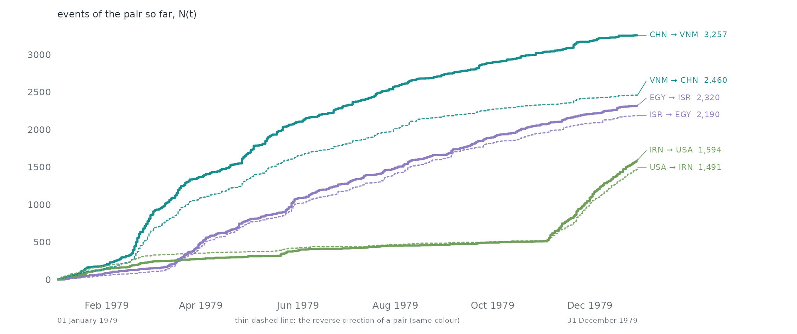
Pairs as counting processes. The counting process N(t) of the 6 busiest pairs: the number of events of the pair up to time t. Together they make 9.2% of all events. Steep stretches are bursts and flat ones silences. 6 of these pairs are the reverse of another, so replies run alongside the messages they answer.
Statistical profile.
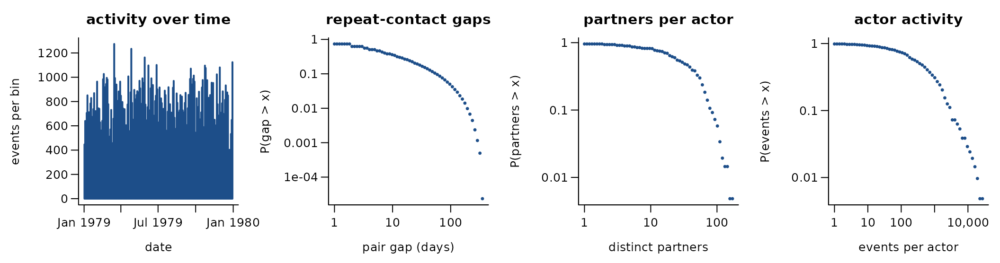
144,177 directed events among 207 actors over 364.0 days (7,222 distinct ordered pairs). 95.0% of events repeat an earlier ordered pair; if every event chose a pair at random the share would be 71.4%. 88.1% of events answer an earlier event in the opposite direction. The burstiness coefficient of the gaps between successive events of the same pair is 0.32 (0 for a Poisson process, positive when events cluster in bursts); the most active tenth of the actors take part in 61.3% of events (Gini 0.74). 99.7% of events share their time stamp with an earlier one. 1979 file: actor-1 country -> actor-2 country, CAMEO events
A conditional logit on the first 4,000 events (one sampled control per event) gives:
| term | estimate | s.e. |
|---|---|---|
| log(1 + sender’s past events) | 0.66 | 0.04 |
| log(1 + receiver’s past events received) | 0.67 | 0.04 |
| log(1 + past events receiver -> sender) | 1.28 | 0.14 |
Get the data
download.file("https://data.gdeltproject.org/events/1979.zip", "1979.zip", mode = "wb")
download.file("https://data.gdeltproject.org/events/20261015.export.CSV.zip", "20261015.export.CSV.zip", mode = "wb")
download.file("https://data.gdeltproject.org/events/md5sums", "md5sums", mode = "wb")
download.file("https://www.gdeltproject.org/data/documentation/GDELT-Data_Format_Codebook.pdf", "GDELT-Data_Format_Codebook.pdf", mode = "wb")
download.file("https://www.gdeltproject.org/data/documentation/CAMEO.Manual.1.1b3.pdf", "CAMEO.Manual.1.1b3.pdf", mode = "wb")A reader that turns these files into a
(sender, receiver, time) table is
readers[["gdelt"]] in data-raw/catalogue/readers.R.
POLECAT weekly event data 2024
Source: https://doi.org/10.7910/DVN/AJGVIT · Licence: CC0 1.0 · Status in amorem: may be redistributed with attribution.
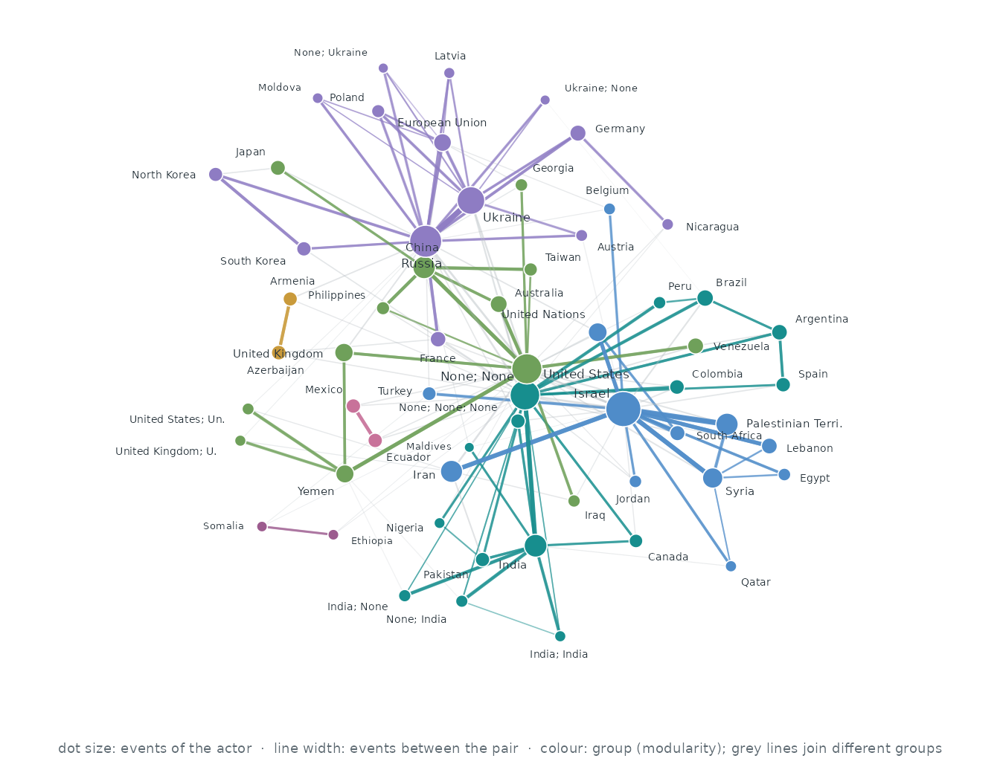
Who interacts with whom. The 60 actors of the busiest pairs, out of 3,790; events between two of them are 63.5% of all events. Each actor’s three strongest ties are drawn (156 of 957 pairs that ever interacted): wider, darker lines carry more events, larger dots are more active actors, and colours are groups found by modularity (Louvain).
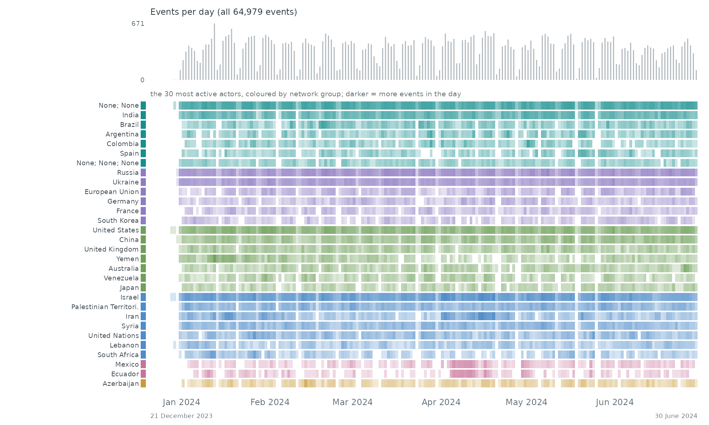
When. Each row is one of the 30 most active actors of the network, coloured by its group there; a cell is darker the more events (with anyone) the actor took part in during that stretch of time. The grey bars on top count all 64,979 events.
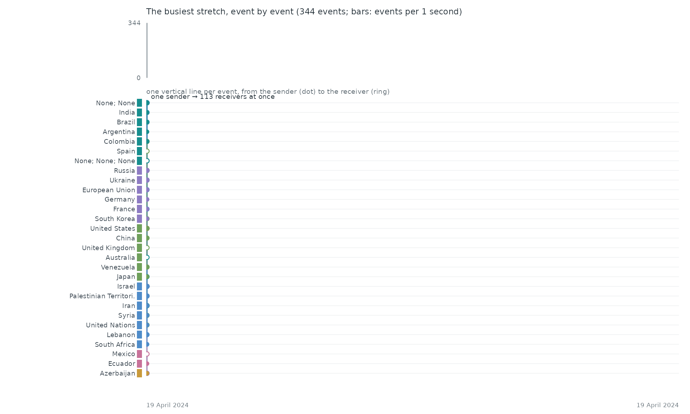
Event by event. The busiest stretch of the record, 19 April 2024 to 19 April 2024, event by event: each vertical line is one event between two of the actors above, from the sender (dot) to the receiver (ring).
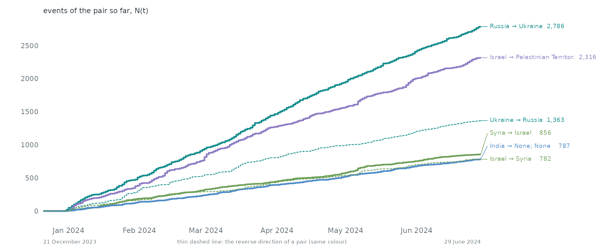
Pairs as counting processes. The counting process N(t) of the 6 busiest pairs: the number of events of the pair up to time t. Together they make 13.7% of all events. Steep stretches are bursts and flat ones silences. 4 of these pairs are the reverse of another, so replies run alongside the messages they answer.
Statistical profile.
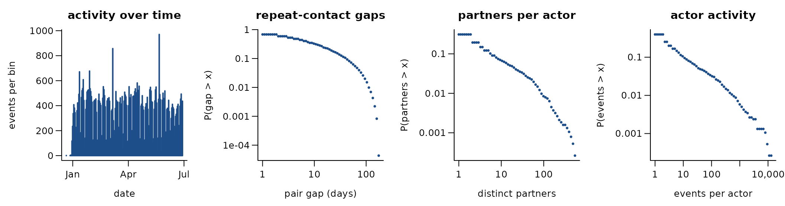
64,979 directed events among 3,790 actors over 191.0 days (12,128 distinct ordered pairs). 81.3% of events repeat an earlier ordered pair; if every event chose a pair at random the share would be 0.2%. 73.0% of events answer an earlier event in the opposite direction. The burstiness coefficient of the gaps between successive events of the same pair is 0.25 (0 for a Poisson process, positive when events cluster in bursts); the most active tenth of the actors take part in 95.2% of events (Gini 0.95). 99.7% of events share their time stamp with an earlier one. 2024 weekly files: actor country -> recipient country, PLOVER events
A conditional logit on the first 4,000 events (one sampled control per event) gives:
| term | estimate | s.e. |
|---|---|---|
| log(1 + sender’s past events) | 1.17 | 0.07 |
| log(1 + receiver’s past events received) | 1.00 | 0.06 |
| log(1 + past events receiver -> sender) | 4.71 | 1.11 |
Get the data
download.file("https://dataverse.harvard.edu/api/access/datafile/7053958?format=original", "POLECAT Data Dictionary.docx", mode = "wb")
download.file("https://dataverse.harvard.edu/api/access/datafile/7047997?format=original", "PLOVER_MANUAL.pdf", mode = "wb")
download.file("https://dataverse.harvard.edu/api/access/datafile/10399129", "ngecEvents.DV.2024.txt", mode = "wb")A reader that turns these files into a
(sender, receiver, time) table is
readers[["polecat"]] in data-raw/catalogue/readers.R.
Cline Center Phoenix NYT event data 1945-2005
Source: https://databank.illinois.edu/ · Licence: unknown (databank page returned 403) · Status in amorem: no licence stated: not redistributed; obtain from the source.
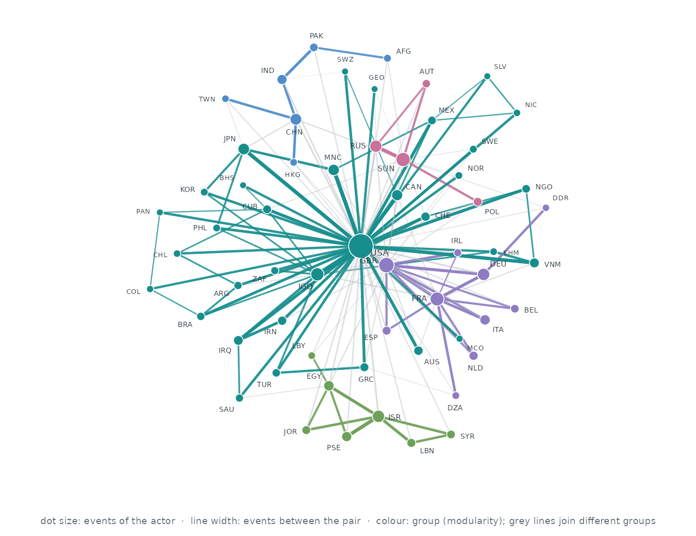
Who interacts with whom. The 60 actors of the busiest pairs, out of 213; events between two of them are 79.5% of all events. Each actor’s three strongest ties are drawn (160 of 1,508 pairs that ever interacted): wider, darker lines carry more events, larger dots are more active actors, and colours are groups found by modularity (Louvain).
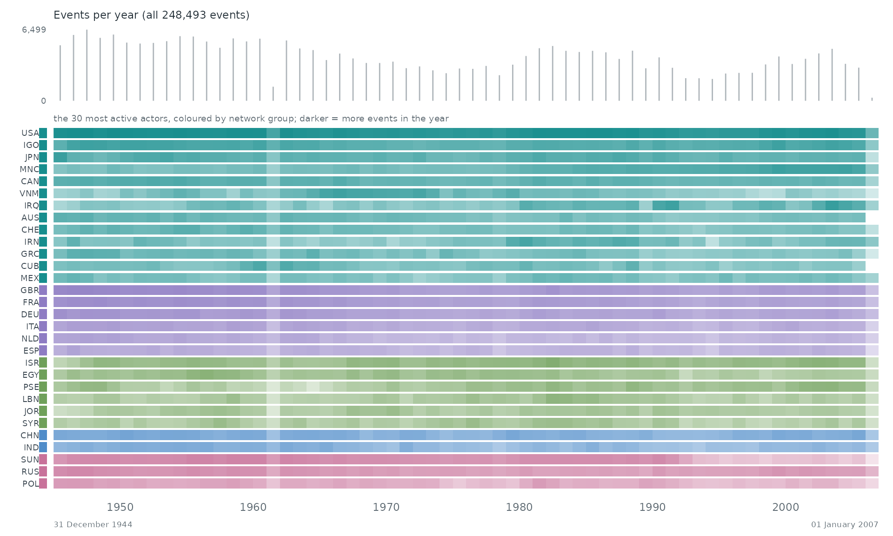
When. Each row is one of the 30 most active actors of the network, coloured by its group there; a cell is darker the more events (with anyone) the actor took part in during that stretch of time. The grey bars on top count all 248,493 events.
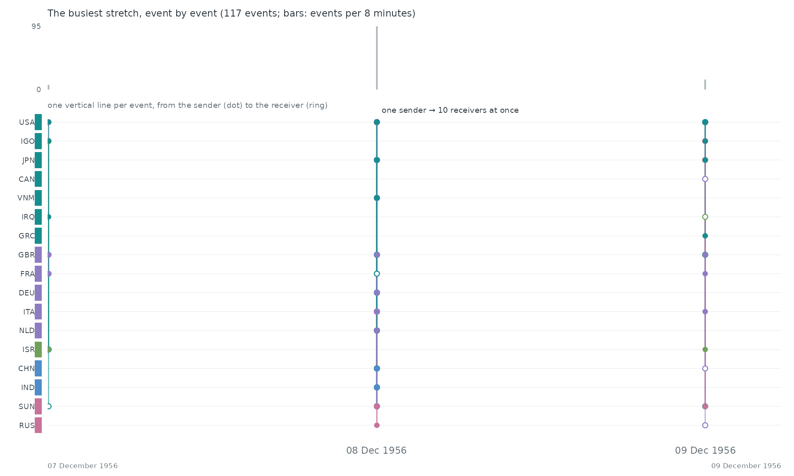
Event by event. The busiest stretch of the record, 07 December 1956 to 09 December 1956, event by event: each vertical line is one event between two of the actors above, from the sender (dot) to the receiver (ring).
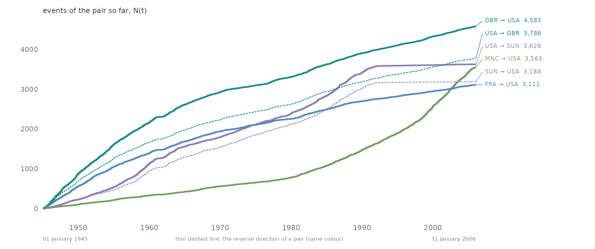
Pairs as counting processes. The counting process N(t) of the 6 busiest pairs: the number of events of the pair up to time t. Together they make 8.8% of all events. Steep stretches are bursts and flat ones silences. 4 of these pairs are the reverse of another, so replies run alongside the messages they answer.
Statistical profile.
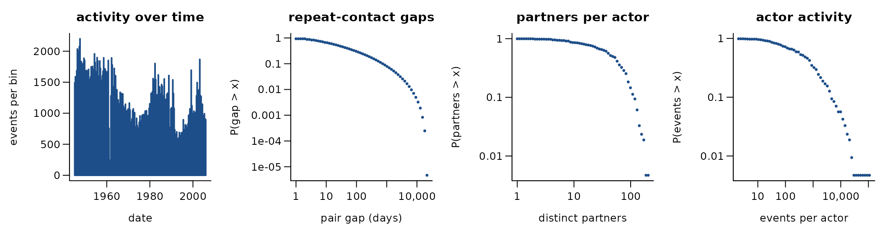
248,493 directed events among 213 actors over 22,310.0 days (10,090 distinct ordered pairs). 95.9% of events repeat an earlier ordered pair; if every event chose a pair at random the share would be 81.9%. 95.5% of events answer an earlier event in the opposite direction. The burstiness coefficient of the gaps between successive events of the same pair is 0.55 (0 for a Poisson process, positive when events cluster in bursts); the most active tenth of the actors take part in 70.7% of events (Gini 0.80). 91.2% of events share their time stamp with an earlier one. source root actor -> target root actor (country codes), New York Times stories
A conditional logit on the first 4,000 events (one sampled control per event) gives:
| term | estimate | s.e. |
|---|---|---|
| log(1 + sender’s past events) | 0.94 | 0.06 |
| log(1 + receiver’s past events received) | 0.84 | 0.06 |
| log(1 + past events receiver -> sender) | 0.99 | 0.17 |
Get the data
download.file("https://databank.illinois.edu/datafiles/7ig9i/download", "README.md", mode = "wb")
download.file("https://databank.illinois.edu/datafiles/wfuxu/download", "Phoenix_Variable_Descriptions_8.30.2019.pdf", mode = "wb")
download.file("https://databank.illinois.edu/datafiles/mj6p0/download", "PhoenixNYT_1945-2005.csv", mode = "wb")A reader that turns these files into a
(sender, receiver, time) table is
readers[["phoenix-cline"]] in data-raw/catalogue/readers.R.
UCDP conflict data (GED, dyadic, actor, interstate onsets)
Source: https://ucdp.uu.se/downloads/ · Licence: CC BY
4.0 · Status in amorem: bundled as ucdp_dyads.
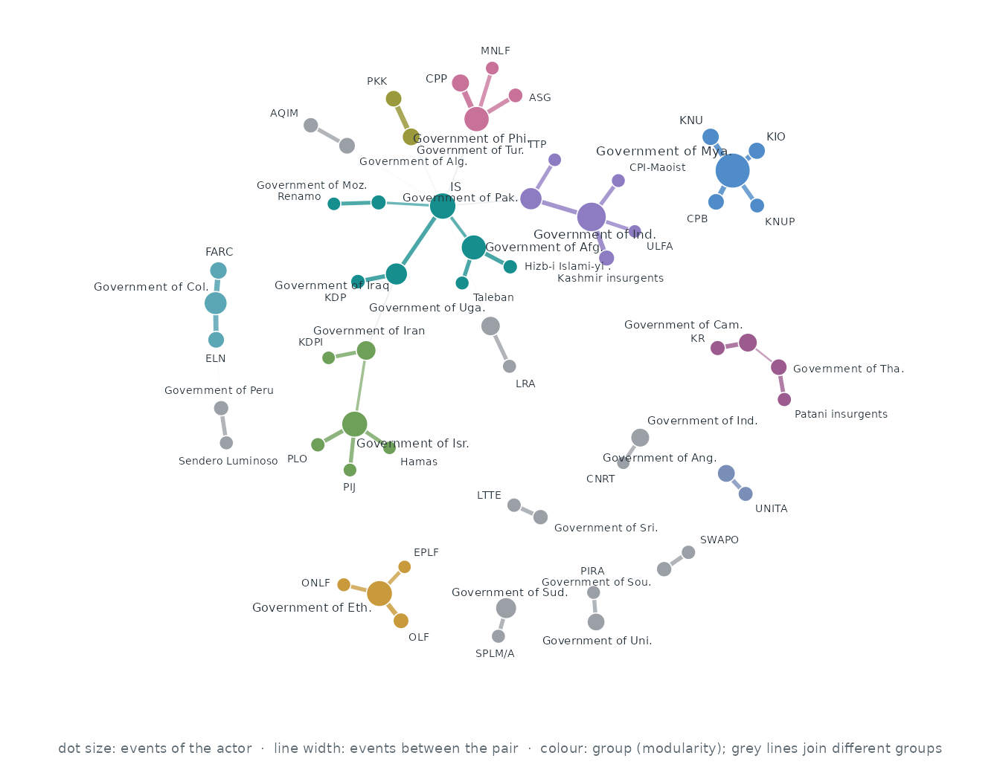
Who interacts with whom. The 60 actors of the busiest pairs, out of 704; events between two of them are 31.2% of all events. Each actor’s three strongest ties are drawn (49 of 51 pairs that ever interacted): wider, darker lines carry more events, larger dots are more active actors, and colours are groups found by modularity (Louvain).

When. Each row is one of the 30 most active actors of the network, coloured by its group there; a cell is darker the more events (with anyone) the actor took part in during that stretch of time. The grey bars on top count all 3,518 events.
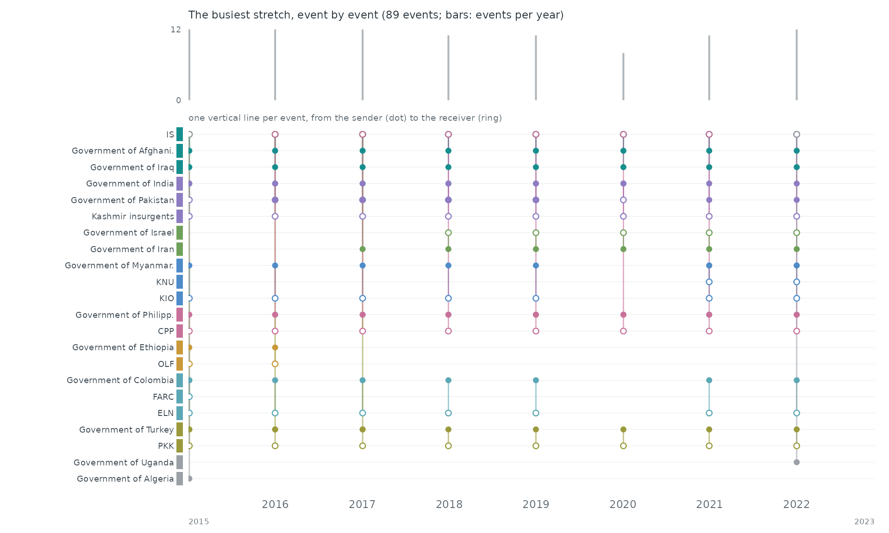
Event by event. The busiest stretch of the record, 2015 to 2023, event by event: each vertical line is one event between two of the actors above, from the sender (dot) to the receiver (ring).
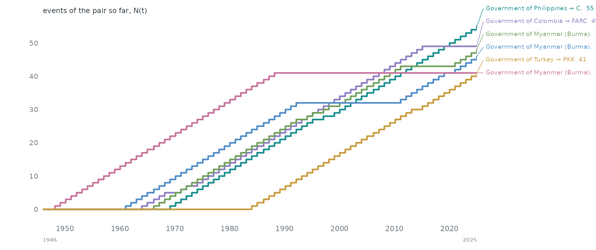
Pairs as counting processes. The counting process N(t) of the 6 busiest pairs: the number of events of the pair up to time t. Together they make 8.0% of all events. Steep stretches are bursts and flat ones silences.
Statistical profile.
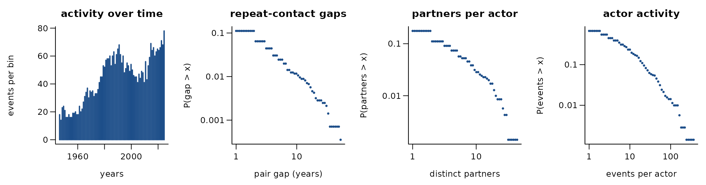
3,518 directed events among 704 actors over 79.0 years (695 distinct ordered pairs). 80.2% of events repeat an earlier ordered pair; if every event chose a pair at random the share would be 0.4%. 0.0% of events answer an earlier event in the opposite direction. The burstiness coefficient of the gaps between successive events of the same pair is 0.27 (0 for a Poisson process, positive when events cluster in bursts); the most active tenth of the actors take part in 58.9% of events (Gini 0.70). 97.7% of events share their time stamp with an earlier one. conflict dyad-years 1946-2025 (UCDP dyadic); one row per active dyad and year
A conditional logit on the first 3,518 events (one sampled control per event) gives:
| term | estimate | s.e. |
|---|---|---|
| log(1 + sender’s past events) | 1.63 | 0.07 |
| log(1 + receiver’s past events received) | 0.49 | 0.07 |
| log(1 + past events receiver -> sender) | -8.56 | 2238.98 |
These coefficients reflect how the data are built, not behaviour: a conflict dyad-year repeats every year the conflict is active.
Get the data
download.file("https://ucdp.uu.se/downloads/ged/ged261-csv.zip", "ged261-csv.zip", mode = "wb")
download.file("https://ucdp.uu.se/downloads/dyadic/ucdp-dyadic-261-csv.zip", "ucdp-dyadic-261-csv.zip", mode = "wb")
download.file("https://ucdp.uu.se/downloads/ucdpprio/ucdp-prio-acd-261-csv.zip", "ucdp-prio-acd-261-csv.zip", mode = "wb")
download.file("https://ucdp.uu.se/downloads/brd/ucdp-brd-dyadic-261-csv.zip", "ucdp-brd-dyadic-261-csv.zip", mode = "wb")
download.file("https://ucdp.uu.se/downloads/actor/ucdp-actor-261-csv.zip", "ucdp-actor-261-csv.zip", mode = "wb")
download.file("https://ucdp.uu.se/downloads/peace/ucdp-peace-agreements-222.xlsx", "ucdp-peace-agreements-222.xlsx", mode = "wb")
download.file("https://ucdp.uu.se/downloads/nsos/ucdp-nonstate-261-csv.zip", "ucdp-nonstate-261-csv.zip", mode = "wb")
download.file("https://ucdp.uu.se/downloads/extsup/ESD/ucdp-esd-dy-181.xlsx", "ucdp-esd-dy-181.xlsx", mode = "wb")
download.file("https://ucdp.uu.se/downloads/onset/ucdp-interstate-conflict-onset-251.csv", "ucdp-interstate-conflict-onset-251.csv", mode = "wb")
download.file("https://ucdp.uu.se/downloads/actor/translate_actor.csv", "translate_actor.csv", mode = "wb")
download.file("https://ucdp.uu.se/downloads/actor/translate_dyad.csv", "translate_dyad.csv", mode = "wb")A reader that turns these files into a
(sender, receiver, time) table is
readers[["ucdp"]] in data-raw/catalogue/readers.R.
ATOP alliance treaty obligations 5.1
Source: http://www.atopdata.org/data.html · Licence: none stated · Status in amorem: no licence stated: not redistributed; obtain from the source.
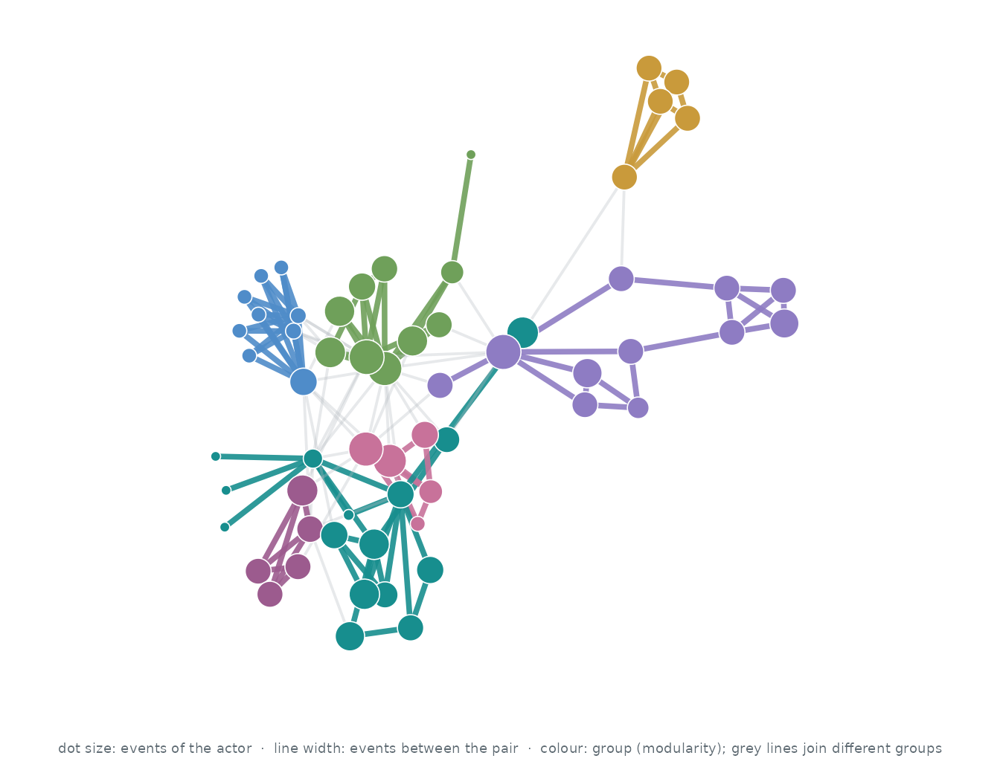
Who interacts with whom. The 60 actors of the busiest pairs, out of 207; events between two of them are 14.8% of all events. Each actor’s three strongest ties are drawn (139 of 757 pairs that ever interacted): wider, darker lines carry more events, larger dots are more active actors, and colours are groups found by modularity (Louvain).
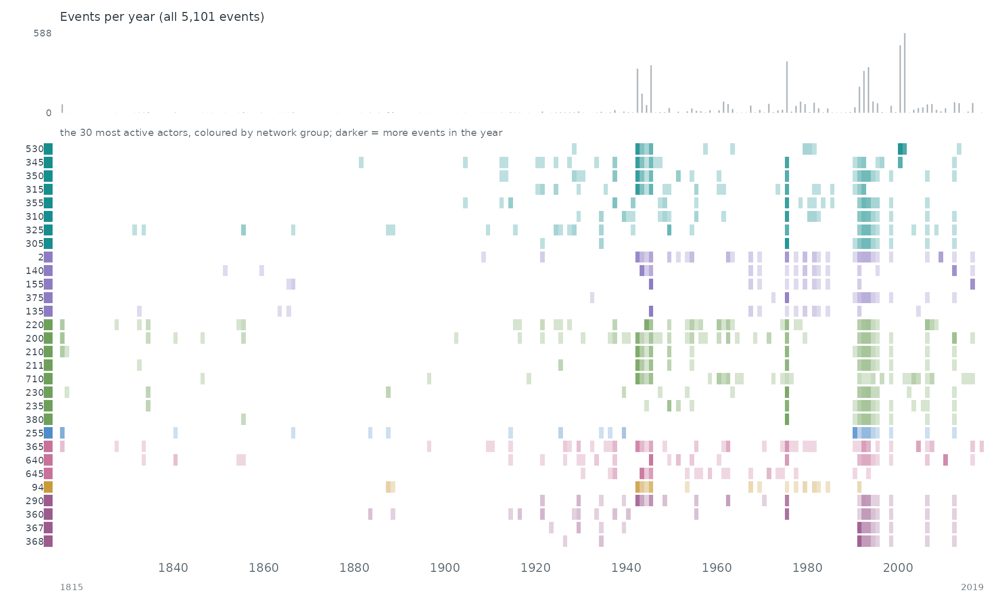
When. Each row is one of the 30 most active actors of the network, coloured by its group there; a cell is darker the more events (with anyone) the actor took part in during that stretch of time. The grey bars on top count all 5,101 events.
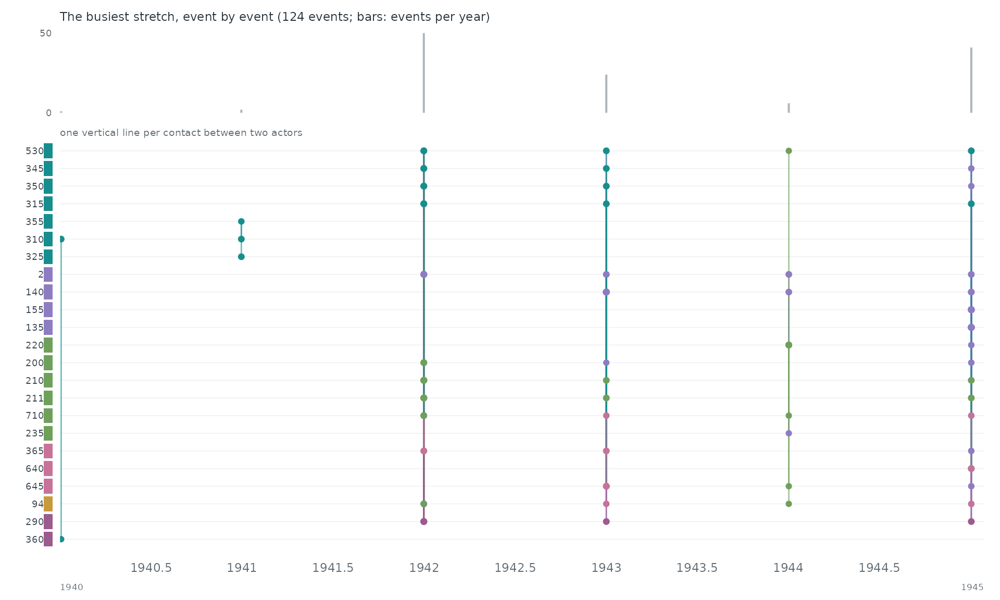
Event by event. The busiest stretch of the record, 1940 to 1945, event by event: each vertical line is one event between two of the actors above.
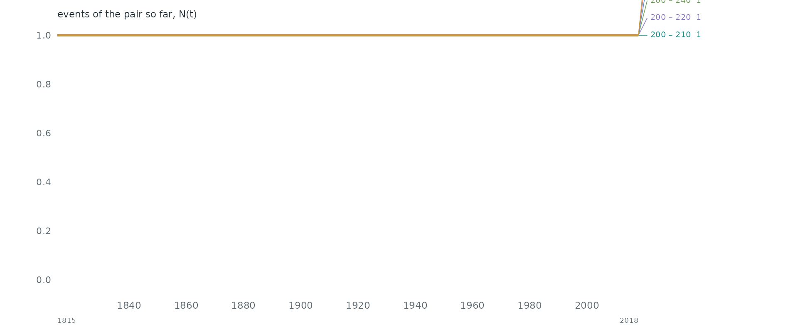
Pairs as counting processes. The counting process N(t) of the 6 busiest pairs: the number of events of the pair up to time t. Together they make 0.1% of all events. Steep stretches are bursts and flat ones silences.
Statistical profile.
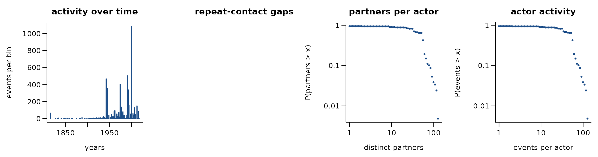
5,101 undirected contacts among 207 actors over 203.0 years (5,101 distinct pairs). 0.0% of events repeat an earlier pair; if every event chose a pair at random the share would be 11.1%. The burstiness coefficient of the gaps between successive events of the same pair is NA (0 for a Poisson process, positive when events cluster in bursts); the most active tenth of the actors take part in 20.4% of events (Gini 0.27). 97.4% of events share their time stamp with an earlier one. first year each state pair shares an alliance (ATOP dyad-years)
Get the data
download.file("http://www.atopdata.org/uploads/6/9/1/3/69134503/atop_5.1__.csv_.zip", "atop_5.1__.csv_.zip", mode = "wb")A reader that turns these files into a
(sender, receiver, time) table is
readers[["atop"]] in data-raw/catalogue/readers.R.
Africa’s diplomatic visits (foreign ministers) 2010-2022
Source: https://doi.org/10.7910/DVN/QXOUAR · Licence: CC BY 4.0 · Status in amorem: may be redistributed with attribution.
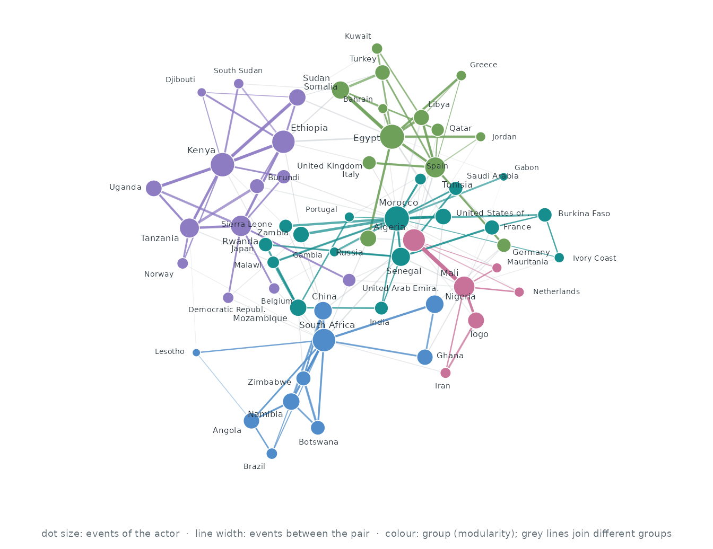
Who interacts with whom. The 60 actors of the busiest pairs, out of 183; events between two of them are 73.6% of all events. Each actor’s three strongest ties are drawn (149 of 718 pairs that ever interacted): wider, darker lines carry more events, larger dots are more active actors, and colours are groups found by modularity (Louvain).
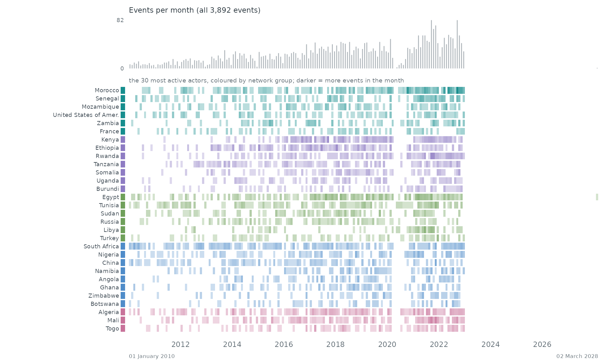
When. Each row is one of the 30 most active actors of the network, coloured by its group there; a cell is darker the more events (with anyone) the actor took part in during that stretch of time. The grey bars on top count all 3,892 events.
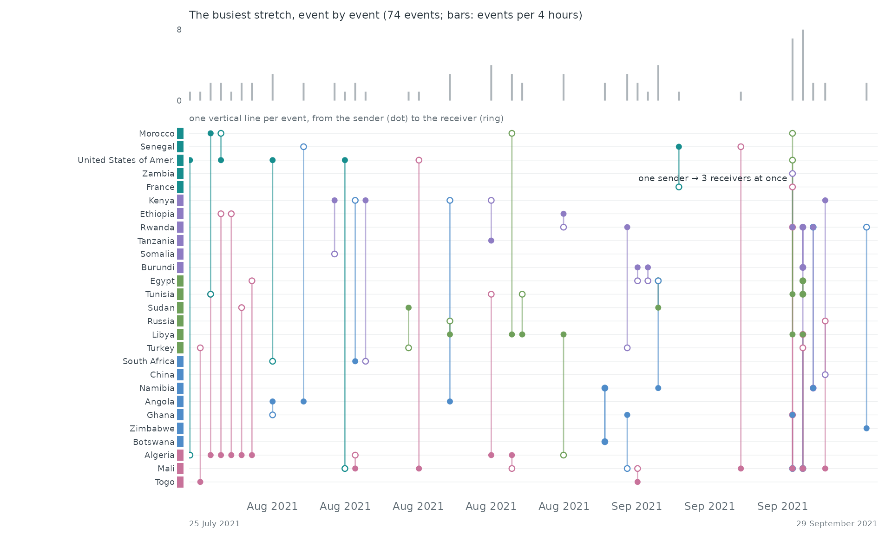
Event by event. The busiest stretch of the record, 25 July 2021 to 29 September 2021, event by event: each vertical line is one event between two of the actors above, from the sender (dot) to the receiver (ring).
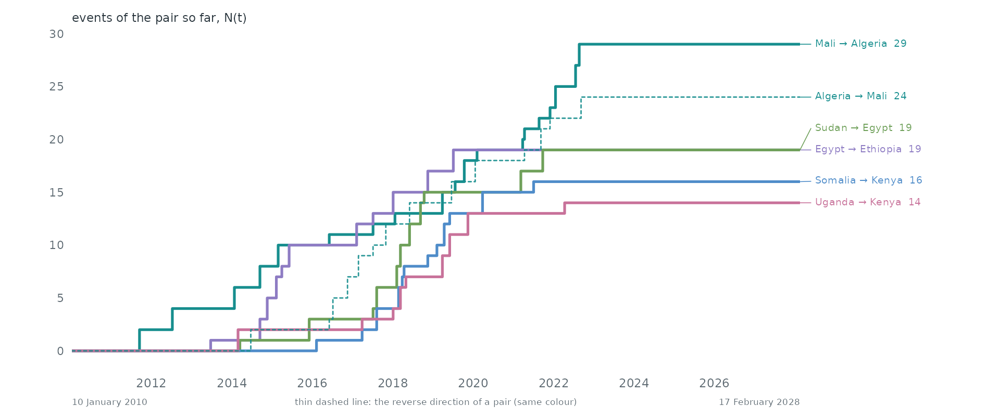
Pairs as counting processes. The counting process N(t) of the 6 busiest pairs: the number of events of the pair up to time t. Together they make 3.1% of all events. Steep stretches are bursts and flat ones silences. 2 of these pairs are the reverse of another, so replies run alongside the messages they answer.
Statistical profile.
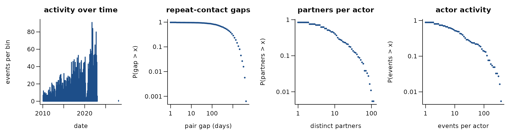
3,892 directed events among 183 actors over 6,612.0 days (1,884 distinct ordered pairs). 51.6% of events repeat an earlier ordered pair; if every event chose a pair at random the share would be 5.6%. 43.1% of events answer an earlier event in the opposite direction. The burstiness coefficient of the gaps between successive events of the same pair is -0.00 (0 for a Poisson process, positive when events cluster in bursts); the most active tenth of the actors take part in 55.6% of events (Gini 0.71). 46.0% of events share their time stamp with an earlier one. visitor country -> host country, foreign ministers
A conditional logit on the first 3,892 events (one sampled control per event) gives:
| term | estimate | s.e. |
|---|---|---|
| log(1 + sender’s past events) | 1.30 | 0.06 |
| log(1 + receiver’s past events received) | 1.28 | 0.06 |
| log(1 + past events receiver -> sender) | 0.63 | 0.15 |
Get the data
download.file("https://dataverse.harvard.edu/api/access/datafile/13891152?format=original", "africa_mfa_2010_2022.xlsx", mode = "wb")A reader that turns these files into a
(sender, receiver, time) table is
readers[["africa-mfa-visits"]] in data-raw/catalogue/readers.R.
Italy’s diplomatic visits 2000-2023
Source: https://doi.org/10.7910/DVN/CY7Y8Z · Licence: CC BY 4.0 · Status in amorem: may be redistributed with attribution.
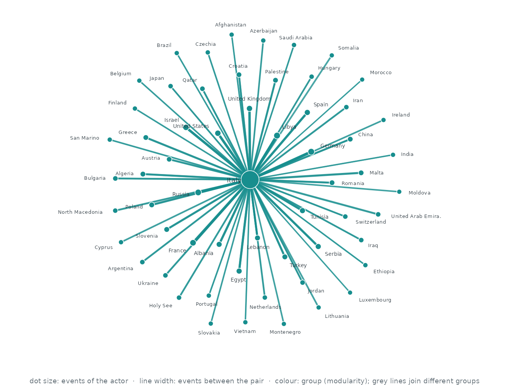
Who interacts with whom. The 60 actors of the busiest pairs, out of 158; events between two of them are 78.4% of all events. Each actor’s three strongest ties are drawn (59 of 59 pairs that ever interacted): wider, darker lines carry more events, larger dots are more active actors, and colours are groups found by modularity (Louvain).
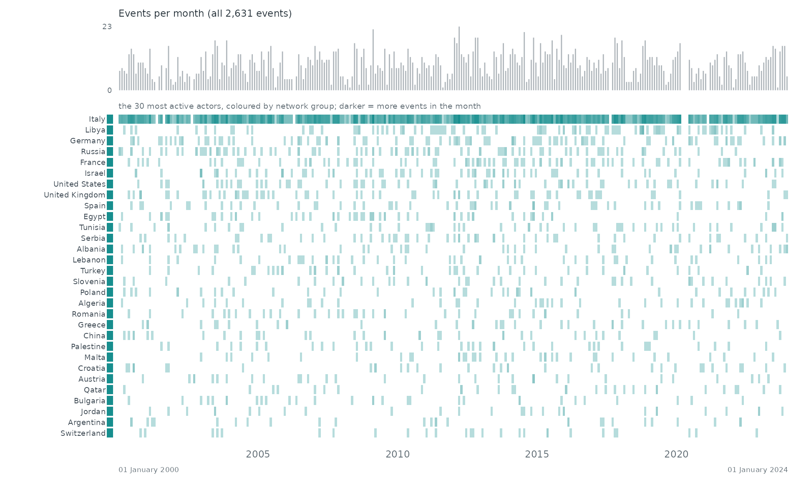
When. Each row is one of the 30 most active actors of the network, coloured by its group there; a cell is darker the more events (with anyone) the actor took part in during that stretch of time. The grey bars on top count all 2,631 events.
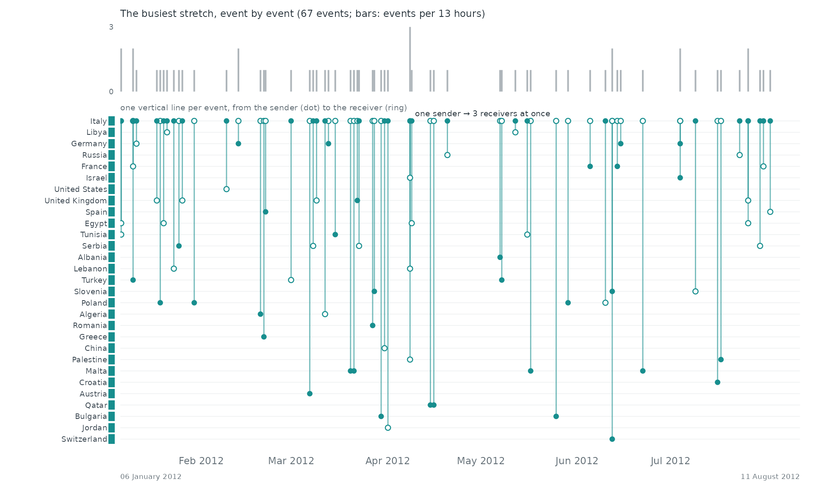
Event by event. The busiest stretch of the record, 06 January 2012 to 11 August 2012, event by event: each vertical line is one event between two of the actors above, from the sender (dot) to the receiver (ring).
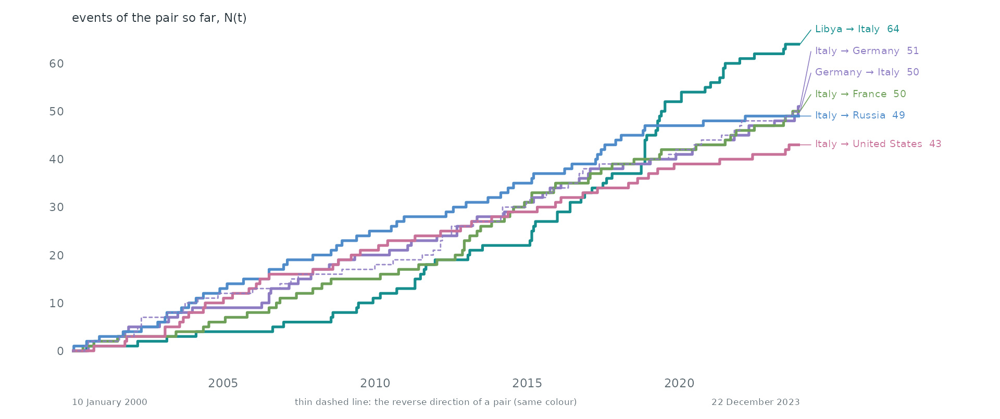
Pairs as counting processes. The counting process N(t) of the 6 busiest pairs: the number of events of the pair up to time t. Together they make 11.7% of all events. Steep stretches are bursts and flat ones silences. 2 of these pairs are the reverse of another, so replies run alongside the messages they answer.
Statistical profile.
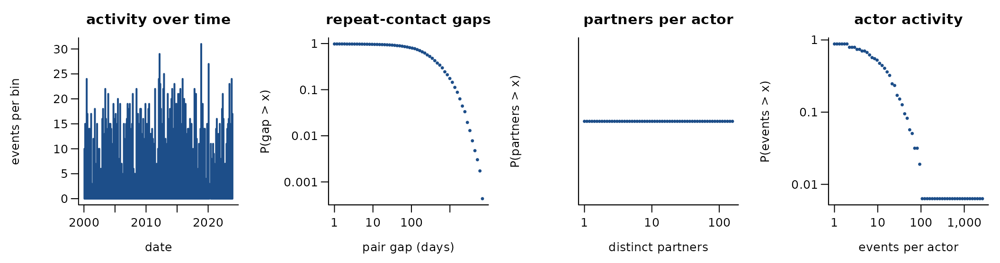
2,631 directed events among 158 actors over 8,747.0 days (275 distinct ordered pairs). 89.5% of events repeat an earlier ordered pair; if every event chose a pair at random the share would be 5.1%. 85.8% of events answer an earlier event in the opposite direction. The burstiness coefficient of the gaps between successive events of the same pair is 0.12 (0 for a Poisson process, positive when events cluster in bursts); the most active tenth of the actors take part in 68.5% of events (Gini 0.77). visitor -> host
A conditional logit on the first 2,631 events (one sampled control per event) gives:
| term | estimate | s.e. |
|---|---|---|
| log(1 + sender’s past events) | 2.29 | 0.50 |
| log(1 + receiver’s past events received) | 2.21 | 0.40 |
| log(1 + past events receiver -> sender) | -0.20 | 0.59 |
Get the data
download.file("https://dataverse.harvard.edu/api/access/datafile/10790465?format=original", "Dataset_Italy_diplomatic_visits_2000-2023.xlsx", mode = "wb")A reader that turns these files into a
(sender, receiver, time) table is
readers[["italy-diplomatic-visits"]] in data-raw/catalogue/readers.R.
Diplomatic visits of the foreign ministers of Russia and Ukraine 2021-2024
Source: https://doi.org/10.7910/DVN/0HQS45 · Licence: CC0 1.0 · Status in amorem: may be redistributed with attribution.
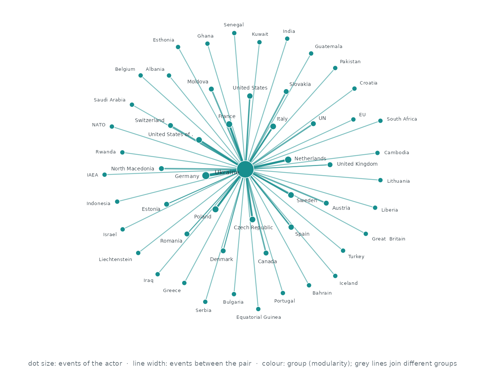
Who interacts with whom. The 54 actors of the busiest pairs, out of 54; events between two of them are 100.0% of all events. Each actor’s three strongest ties are drawn (53 of 53 pairs that ever interacted): wider, darker lines carry more events, larger dots are more active actors, and colours are groups found by modularity (Louvain).
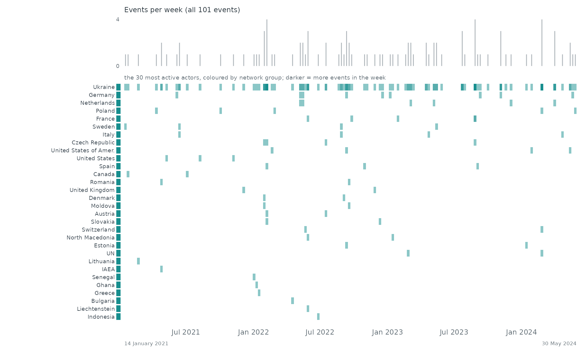
When. Each row is one of the 30 most active actors of the network, coloured by its group there; a cell is darker the more events (with anyone) the actor took part in during that stretch of time. The grey bars on top count all 101 events.
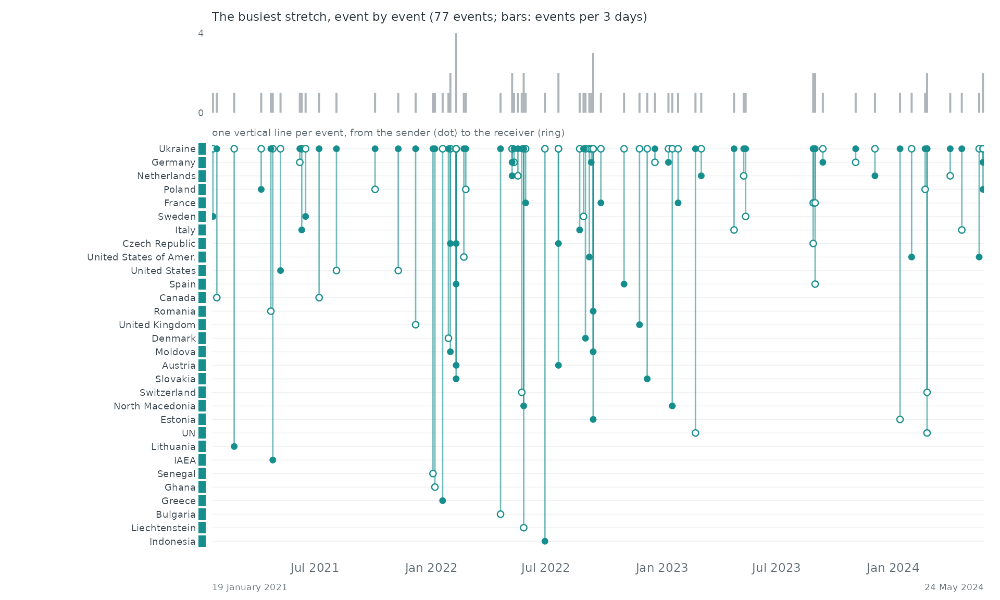
Event by event. The busiest stretch of the record, 19 January 2021 to 24 May 2024, event by event: each vertical line is one event between two of the actors above, from the sender (dot) to the receiver (ring).
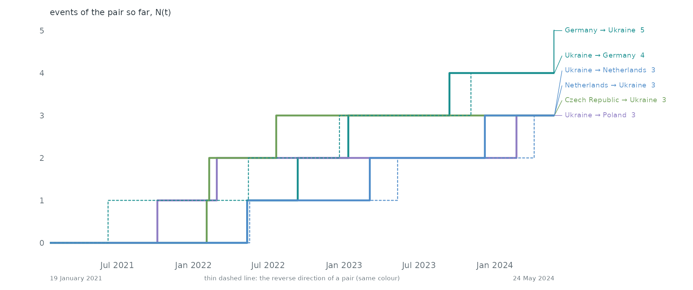
Pairs as counting processes. The counting process N(t) of the 6 busiest pairs: the number of events of the pair up to time t. Together they make 20.8% of all events. Steep stretches are bursts and flat ones silences. 4 of these pairs are the reverse of another, so replies run alongside the messages they answer.
Statistical profile.
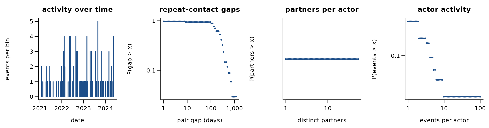
101 directed events among 54 actors over 1,221.0 days (67 distinct ordered pairs). 33.7% of events repeat an earlier ordered pair; if every event chose a pair at random the share would be 1.7%. 33.7% of events answer an earlier event in the opposite direction. The burstiness coefficient of the gaps between successive events of the same pair is -0.12 (0 for a Poisson process, positive when events cluster in bursts); the most active tenth of the actors take part in 64.4% of events (Gini 0.66). visitor -> host
A conditional logit on the first 101 events (one sampled control per event) gives:
| term | estimate | s.e. |
|---|---|---|
| log(1 + sender’s past events) | 4.11 | 1.56 |
| log(1 + receiver’s past events received) | 2.10 | 0.66 |
| log(1 + past events receiver -> sender) | 0.23 | 2.95 |
Get the data
download.file("https://dataverse.harvard.edu/api/access/datafile/10392966?format=original", "Russia and Ukraine MFAs 2021-2024.xlsx", mode = "wb")A reader that turns these files into a
(sender, receiver, time) table is
readers[["russia-ukraine-mfa-visits"]] in data-raw/catalogue/readers.R.
US leader-to-leader diplomatic visits 1946-2019
Source: https://doi.org/10.7910/DVN/2ZNR5R · Licence:
CC0 1.0 · Status in amorem: bundled as
us_leader_visits.

Who interacts with whom. The 60 actors of the busiest pairs, out of 197; events between two of them are 74.0% of all events. Each actor’s three strongest ties are drawn (59 of 59 pairs that ever interacted): wider, darker lines carry more events, larger dots are more active actors, and colours are groups found by modularity (Louvain).

When. Each row is one of the 30 most active actors of the network, coloured by its group there; a cell is darker the more events (with anyone) the actor took part in during that stretch of time. The grey bars on top count all 3,945 events.
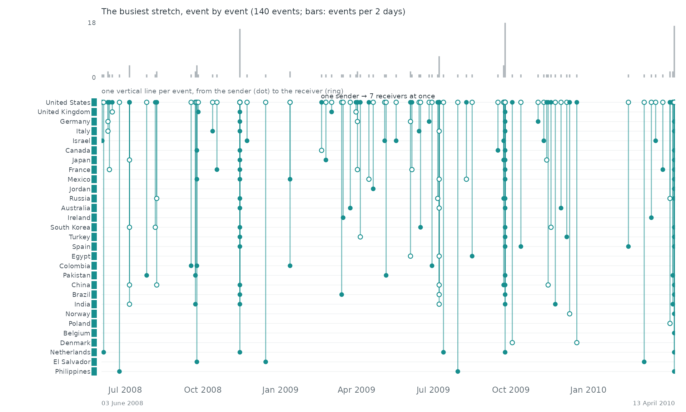
Event by event. The busiest stretch of the record, 03 June 2008 to 13 April 2010, event by event: each vertical line is one event between two of the actors above, from the sender (dot) to the receiver (ring).
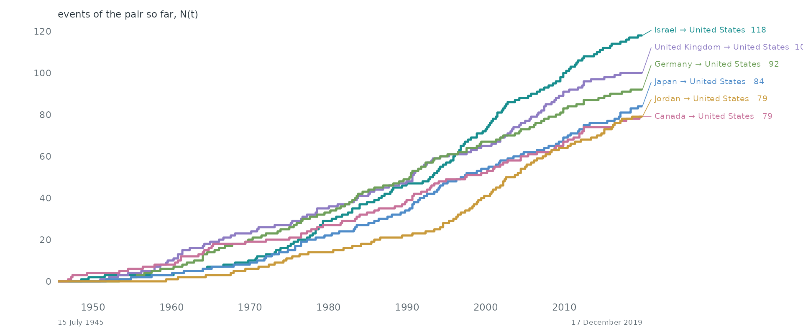
Pairs as counting processes. The counting process N(t) of the 6 busiest pairs: the number of events of the pair up to time t. Together they make 14.0% of all events. Steep stretches are bursts and flat ones silences.
Statistical profile.
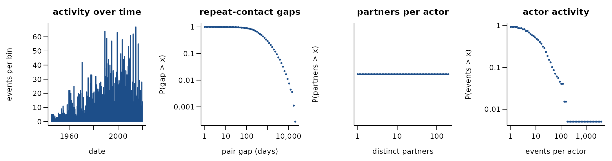
3,945 directed events among 197 actors over 27,183.0 days (323 distinct ordered pairs). 91.8% of events repeat an earlier ordered pair; if every event chose a pair at random the share would be 4.9%. 79.9% of events answer an earlier event in the opposite direction. The burstiness coefficient of the gaps between successive events of the same pair is 0.25 (0 for a Poisson process, positive when events cluster in bursts); the most active tenth of the actors take part in 72.0% of events (Gini 0.79). 31.6% of events share their time stamp with an earlier one. foreign leaders visiting the US and US presidents travelling abroad
A conditional logit on the first 3,945 events (one sampled control per event) gives:
| term | estimate | s.e. |
|---|---|---|
| log(1 + sender’s past events) | 2.38 | 0.49 |
| log(1 + receiver’s past events received) | 2.32 | 0.45 |
| log(1 + past events receiver -> sender) | -0.02 | 0.45 |
Get the data
download.file("https://dataverse.harvard.edu/api/access/datafile/6692525?format=original", "foreign_leader_visits_20221102.tab", mode = "wb")
download.file("https://dataverse.harvard.edu/api/access/datafile/6692526?format=original", "president_travels_20221102.tab", mode = "wb")
download.file("https://dataverse.harvard.edu/api/access/datafile/6866560?format=original", "codebook.pdf", mode = "wb")A reader that turns these files into a
(sender, receiver, time) table is
readers[["us-leader-visits"]] in data-raw/catalogue/readers.R.
goldfish package data: fisheries treaties, RFID validity, Social Evolution
Source: https://github.com/snlab-ch/goldfish · Licence:
GPL-3.0 (source repository/package) · Status in amorem: bundled
as social_evolution_calls,
social_evolution_friendship,
social_evolution_actors since an earlier release; licence
under review.
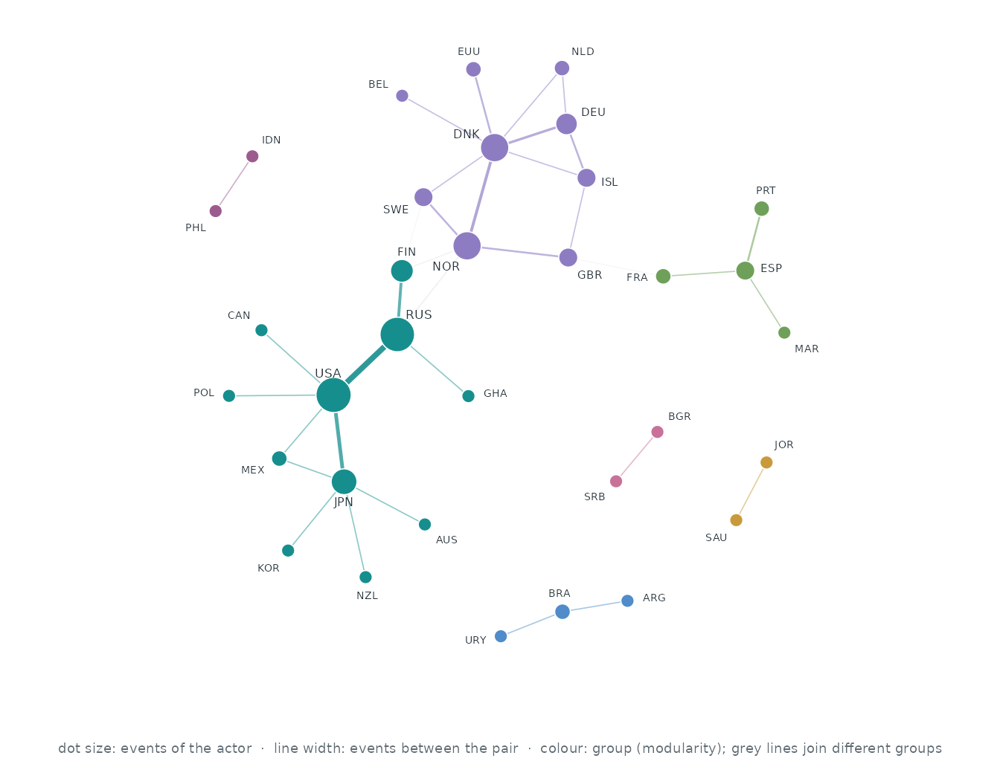
Who interacts with whom. The 33 actors of the busiest pairs, out of 33; events between two of them are 100.0% of all events. Each actor’s three strongest ties are drawn (35 of 35 pairs that ever interacted): wider, darker lines carry more events, larger dots are more active actors, and colours are groups found by modularity (Louvain).
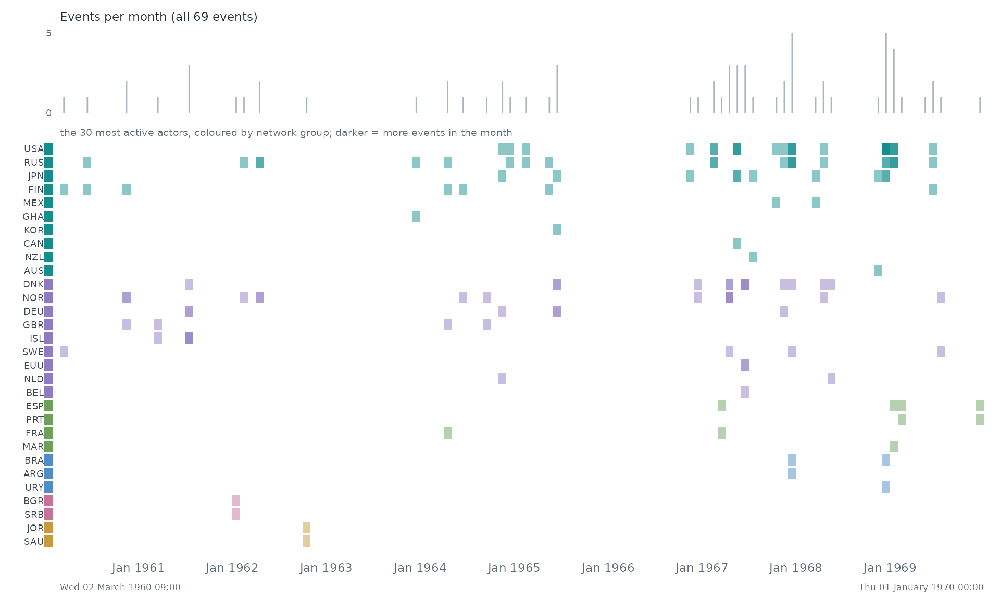
When. Each row is one of the 30 most active actors of the network, coloured by its group there; a cell is darker the more events (with anyone) the actor took part in during that stretch of time. The grey bars on top count all 69 events.
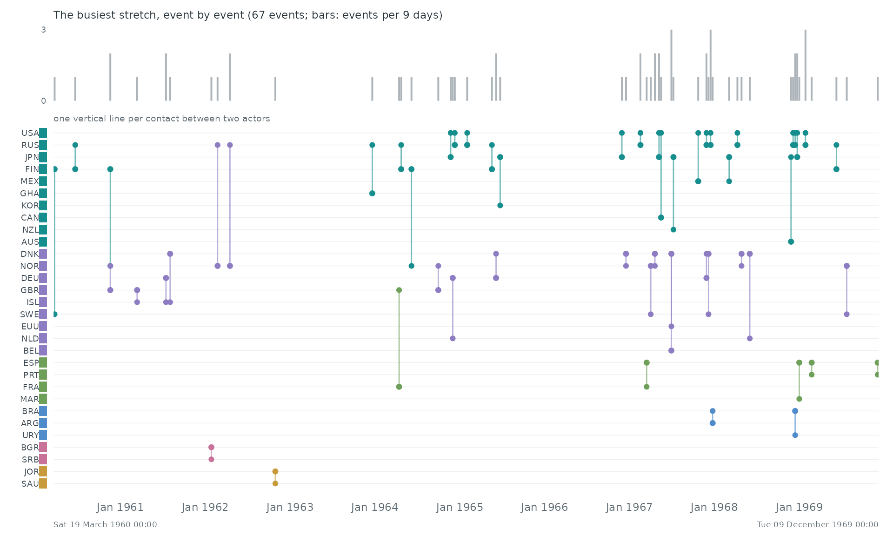
Event by event. The busiest stretch of the record, Sat 19 March 1960 00:00 to Tue 09 December 1969 00:00, event by event: each vertical line is one event between two of the actors above.
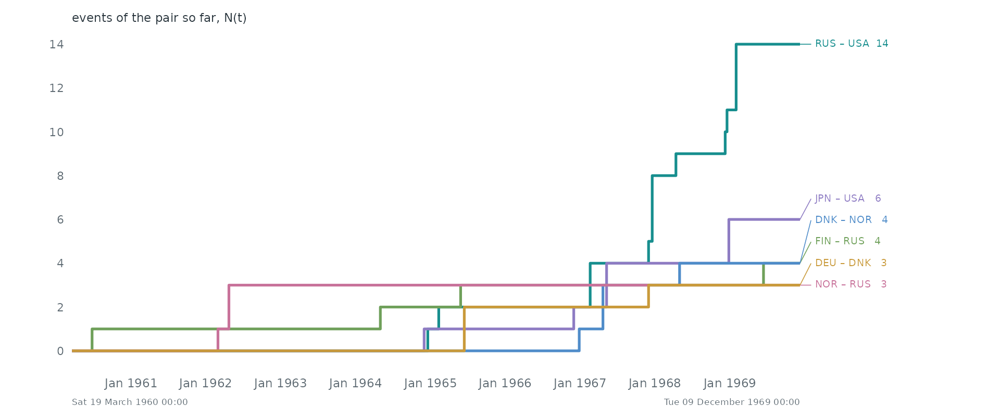
Pairs as counting processes. The counting process N(t) of the 6 busiest pairs: the number of events of the pair up to time t. Together they make 49.3% of all events. Steep stretches are bursts and flat ones silences.
Statistical profile.
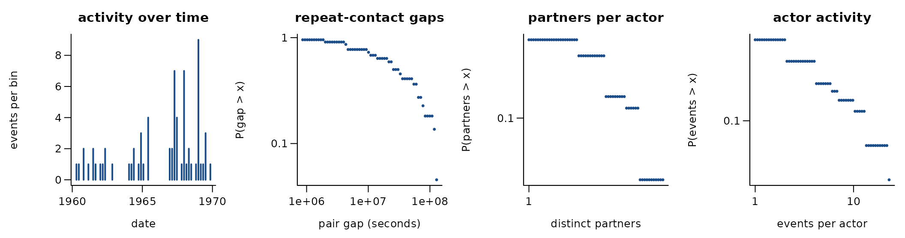
69 undirected contacts among 33 actors over 3,552.0 days (35 distinct pairs). 49.3% of events repeat an earlier pair; if every event chose a pair at random the share would be 6.2%. The burstiness coefficient of the gaps between successive events of the same pair is -0.02 (0 for a Poisson process, positive when events cluster in bursts); the most active tenth of the actors take part in 51.4% of events (Gini 0.58). bilateral fisheries treaties 1960-1970 (goldfish); the folder also holds the RFID validity study and Social Evolution
Get the data
download.file("https://raw.githubusercontent.com/snlab-ch/goldfish/main/data/Fisheries_Treaties_6070.RData", "Fisheries_Treaties_6070.RData", mode = "wb")
download.file("https://raw.githubusercontent.com/snlab-ch/goldfish/main/data/RFID_Validity_Study.RData", "RFID_Validity_Study.RData", mode = "wb")
download.file("https://raw.githubusercontent.com/snlab-ch/goldfish/main/data/Social_Evolution.RData", "Social_Evolution.RData", mode = "wb")
download.file("https://raw.githubusercontent.com/snlab-ch/goldfish/main/R/data_Fisheries_Treaties_6070.R", "data_Fisheries_Treaties_6070.R", mode = "wb")
download.file("https://raw.githubusercontent.com/snlab-ch/goldfish/main/R/data_RFID_Validity_Study.R", "data_RFID_Validity_Study.R", mode = "wb")
download.file("https://raw.githubusercontent.com/snlab-ch/goldfish/main/R/data_Social_Evolution.R", "data_Social_Evolution.R", mode = "wb")A reader that turns these files into a
(sender, receiver, time) table is
readers[["goldfish-datasets"]] in data-raw/catalogue/readers.R.
UNHCR refugee population statistics (refugees R package)
Source: https://cran.r-project.org/package=refugees · Licence: CC BY 4.0 · Status in amorem: may be redistributed with attribution.
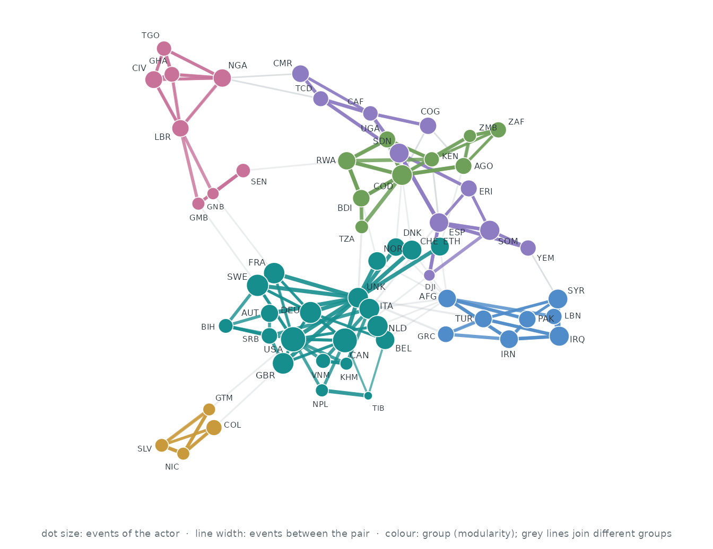
Who interacts with whom. The 60 actors of the busiest pairs, out of 211; events between two of them are 28.6% of all events. Each actor’s three strongest ties are drawn (133 of 1,263 pairs that ever interacted): wider, darker lines carry more events, larger dots are more active actors, and colours are groups found by modularity (Louvain).
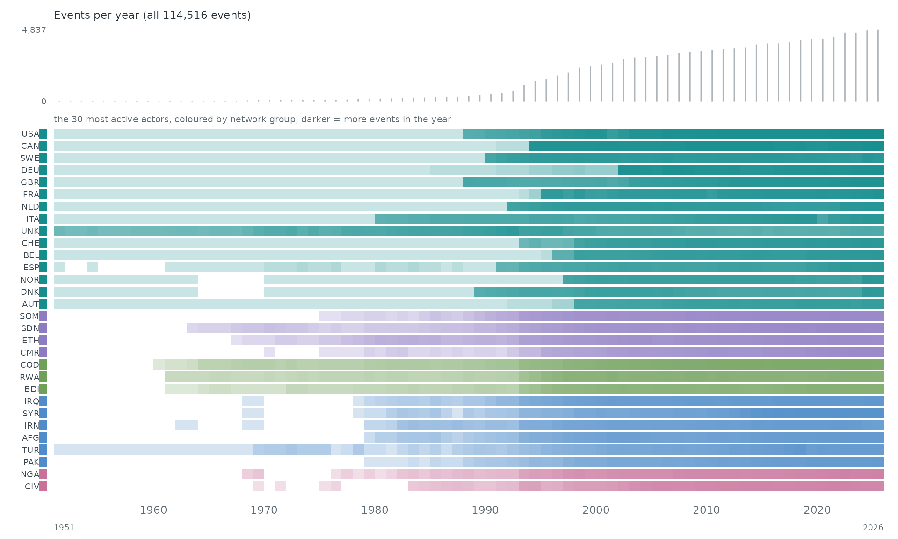
When. Each row is one of the 30 most active actors of the network, coloured by its group there; a cell is darker the more events (with anyone) the actor took part in during that stretch of time. The grey bars on top count all 114,516 events.
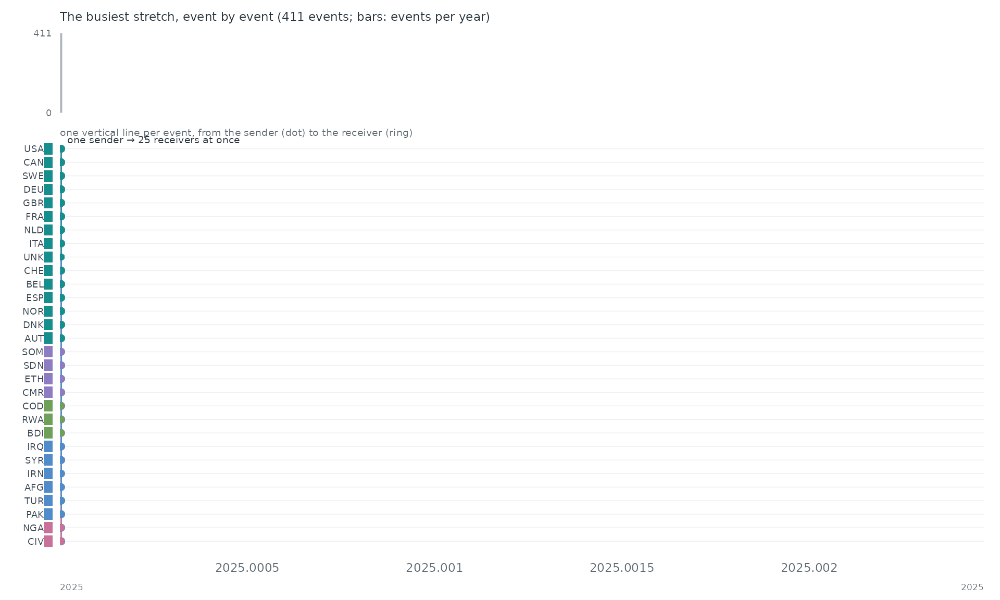
Event by event. The busiest stretch of the record, 2025 to 2025, event by event: each vertical line is one event between two of the actors above, from the sender (dot) to the receiver (ring).
Pairs as counting processes. The counting process N(t) of the 6 busiest pairs: the number of events of the pair up to time t. Together they make 0.4% of all events. Steep stretches are bursts and flat ones silences.
Statistical profile.
114,516 directed events among 211 actors over 74.0 years (6,916 distinct ordered pairs). 94.0% of events repeat an earlier ordered pair; if every event chose a pair at random the share would be 64.2%. 11.3% of events answer an earlier event in the opposite direction. The burstiness coefficient of the gaps between successive events of the same pair is 0.12 (0 for a Poisson process, positive when events cluster in bursts); the most active tenth of the actors take part in 31.3% of events (Gini 0.49). 99.9% of events share their time stamp with an earlier one. origin -> asylum country-years with at least one refugee (UNHCR population statistics)
A conditional logit on the first 4,000 events (one sampled control per event) gives:
| term | estimate | s.e. |
|---|---|---|
| log(1 + sender’s past events) | 1.00 | 0.04 |
| log(1 + receiver’s past events received) | 0.79 | 0.04 |
| log(1 + past events receiver -> sender) | 0.78 | 0.15 |
Get the data
download.file("https://cran.r-project.org/src/contrib/refugees_2025.12.2.tar.gz", "refugees_2025.12.2.tar.gz", mode = "wb")A reader that turns these files into a
(sender, receiver, time) table is
readers[["unhcr-refugees"]] in data-raw/catalogue/readers.R.